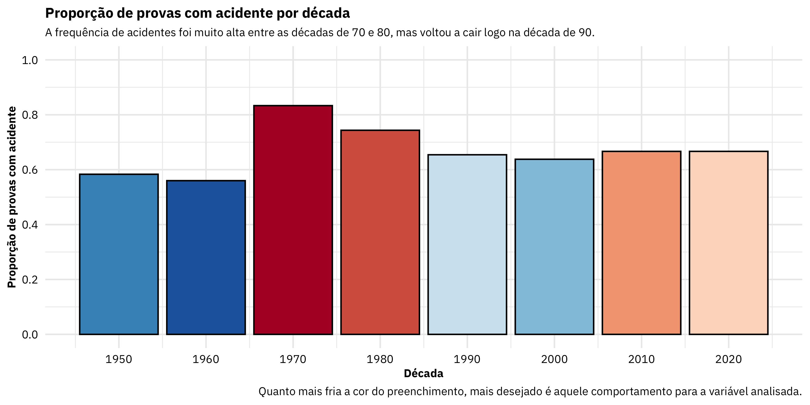
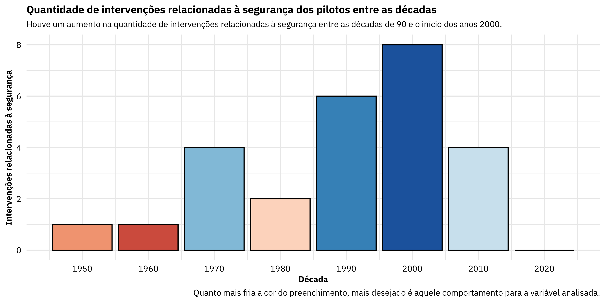
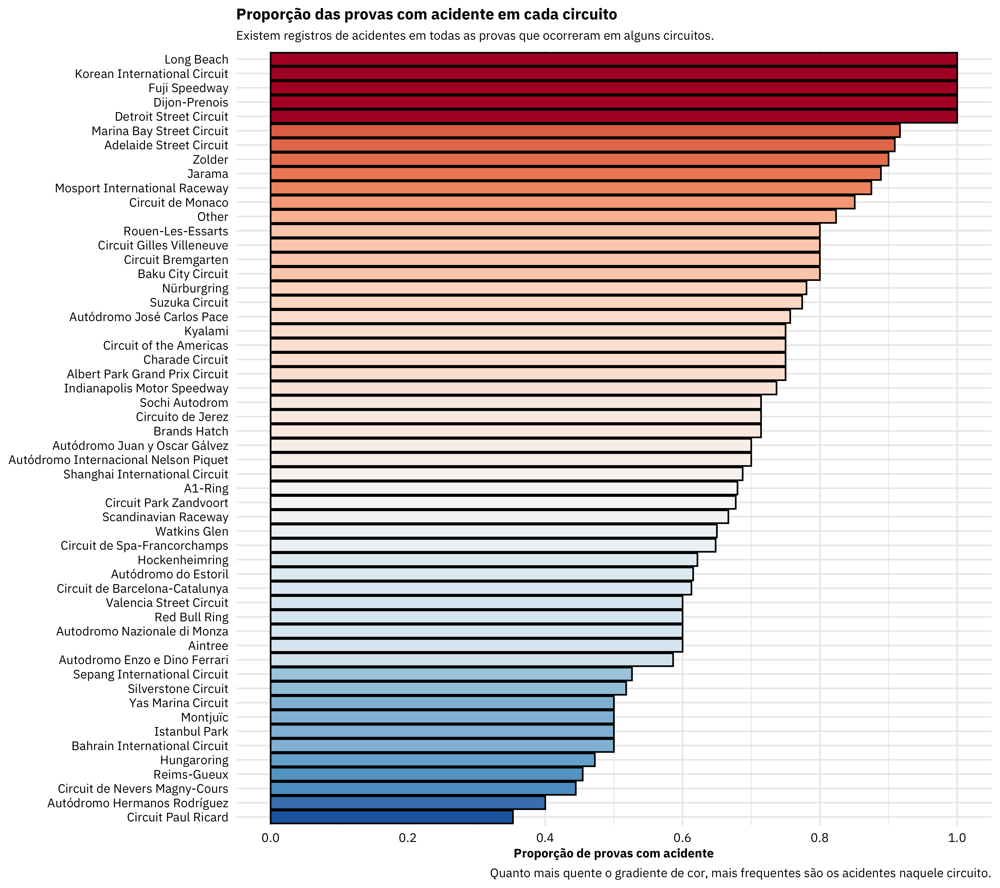

A short description of the post.
blablabla
# carregando os pacotes necessários
library(tidyverse) # core
# library(tidytuesdayR) # ler os arquivos do tidytuesday
library(fs) # manipular paths
library(lubridate) # trablhar com datas
library(readxl) # carregar dados de excel
library(skimr) # descricao do dataframe
# carregando todos os dados a partir do github do tidytuesday
# tt_dataset <- tt_load(x = 2021, week = 37) # se você quiser baixar os dados direto da fonte
# carregando a copia local dos dados
## extraindo os paths das copias locais
paths_copias_locais <- dir_ls(path = 'data/', regexp = '.rds')
# paths_copias_locais <- dir_ls(path = '_posts/2021-09-11-f1-acidentes/data/', regexp = '.rds')
## criando vetor de nomes dos arquivos
nomes_arquivos <- paths_copias_locais %>%
path_file() %>%
path_ext_remove()
## carregando os arquivos em uma lista
tt_dataset <- map(.x = paths_copias_locais, .f = read_rds)
## renomeando os elementos da lista
names(tt_dataset) <- nomes_arquivos
# carregando os dados de dispositivos de segurança na F1
safety <- read_excel(path = 'data/f1_safety.xlsx', skip = 1)
# safety <- read_excel(path = '_posts/2021-09-11-f1-acidentes/data/f1_safety.xlsx', skip = 1)
blablabla
## adicionando o dicionario de resultados
resultados <- left_join(x = tt_dataset$results,
y = tt_dataset$status,
by = 'statusId')
resultados
# A tibble: 25,220 × 19
resultId raceId driverId constructorId number grid position
<dbl> <dbl> <dbl> <dbl> <dbl> <dbl> <chr>
1 1 18 1 1 22 1 "1"
2 2 18 2 2 3 5 "2"
3 3 18 3 3 7 7 "3"
4 4 18 4 4 5 11 "4"
5 5 18 5 1 23 3 "5"
6 6 18 6 3 8 13 "6"
7 7 18 7 5 14 17 "7"
8 8 18 8 6 1 15 "8"
9 9 18 9 2 4 2 "\\N"
10 10 18 10 7 12 18 "\\N"
# … with 25,210 more rows, and 12 more variables: positionText <chr>,
# positionOrder <dbl>, points <dbl>, laps <dbl>, time <chr>,
# milliseconds <chr>, fastestLap <chr>, rank <chr>,
# fastestLapTime <chr>, fastestLapSpeed <chr>, statusId <dbl>,
# status <chr>blablabla
## vetor com as categorias que vou usar como acidente
categorias_acidente <- c('Accident', 'Collision', 'Spun off', 'Injured', 'Injury',
'Fatal accident', 'Eye injury', 'Collision damage', 'Damage')
## juntando padrao de regex para os acidentes
regex_acidentes <- paste0(categorias_acidente, collapse = '|')
## mapeando os acidentes por prova
acidentes_por_prova <- resultados %>%
# selecionando as colunas de interesse
select(raceId, driverId, constructorId, status) %>%
# agrupando pela prova, piloto e construtor
group_by(raceId, driverId, constructorId) %>%
# juntando o status do piloto em cada prova em uma só string
summarise(status = paste(status, collapse = ', '), .groups = 'drop') %>%
# codificando a ocorrencia de um acidente
mutate(
acidente = str_detect(string = status, pattern = regex_acidentes)
) %>%
# agrupando por prova
group_by(raceId) %>%
# sumarizando a base
summarise(
# calculando a quantidade de acidentes por prova
n_acidentes = sum(acidente),
# criando flag para a ocorrencia de acidentes na prova
tem_acidente = n_acidentes > 0
)
acidentes_por_prova
# A tibble: 1,048 × 3
raceId n_acidentes tem_acidente
<dbl> <int> <lgl>
1 1 5 TRUE
2 2 4 TRUE
3 3 2 TRUE
4 4 0 FALSE
5 5 4 TRUE
6 6 5 TRUE
7 7 0 FALSE
8 8 2 TRUE
9 9 0 FALSE
10 10 0 FALSE
# … with 1,038 more rowsblablabla
## dispositivos de seguranca disponiveis ano a ano e total
dispositivos_seguranca <- safety %>%
# expandindo a coluna de ano para conter todos os anos do inicio ao atual
mutate(
Year = map(.x = Year, .f = seq, to = year(Sys.Date()), by = 1)
) %>%
# desaninhando a list column
unnest(cols = Year) %>%
# removendo o nome original da intevenção
select(-Intervention) %>%
# passando a tabela para o formato largo
pivot_wider(id_cols = Year, names_from = ID, values_from = ID, values_fn = length, values_fill = 0) %>%
group_by(Year) %>%
rowwise() %>%
mutate(
n_safety = sum(c_across(I001:I025))
)
dispositivos_seguranca
# A tibble: 70 × 28
# Rowwise: Year
Year I001 I002 I003 I004 I005 I006 I007 I008 I009 I010
<dbl> <int> <int> <int> <int> <int> <int> <int> <int> <int> <int>
1 1952 1 0 0 0 0 0 0 0 0 0
2 1953 1 0 0 0 0 0 0 0 0 0
3 1954 1 0 0 0 0 0 0 0 0 0
4 1955 1 0 0 0 0 0 0 0 0 0
5 1956 1 0 0 0 0 0 0 0 0 0
6 1957 1 0 0 0 0 0 0 0 0 0
7 1958 1 0 0 0 0 0 0 0 0 0
8 1959 1 0 0 0 0 0 0 0 0 0
9 1960 1 0 0 0 0 0 0 0 0 0
10 1961 1 0 0 0 0 0 0 0 0 0
# … with 60 more rows, and 17 more variables: I011 <int>, I012 <int>,
# I013 <int>, I014 <int>, I015 <int>, I016 <int>, I017 <int>,
# I018 <int>, I019 <int>, I020 <int>, I021 <int>, I022 <int>,
# I023 <int>, I024 <int>, I025 <int>, I026 <int>, n_safety <int>blablabla
## quantidade de pilotos e construtores por prova
participantes_por_prova <- resultados %>%
# pegando os valores unicos das chaves primarias por prova
distinct(raceId, driverId, constructorId) %>%
# agrupando por prova
group_by(raceId) %>%
# quantidade de pilotos e construtores por prova
summarise(
n_pilotos = n_distinct(driverId),
n_construtores = n_distinct(constructorId)
)
## calculando a quantidade de voltas em cada prova
voltas_por_prova <- resultados %>%
# considerando apenas os pilotos que concluiram cada prova
filter(status == 'Finished') %>%
# selecionando as colunas de interesse
select(raceId, laps) %>%
# pegando o valor maximo da quantidade de voltas por prova
group_by(raceId) %>%
summarise(laps = max(laps))
## mapeando cada circuito à uma prova
provas <- left_join(x = tt_dataset$races,
y = tt_dataset$circuits,
by = 'circuitId') %>%
# removendo URL da wikipedia
select(-contains('url'), -circuitRef, -circuitId, -round) %>%
# renomeando o nome do GP e do circuito
rename(gp = name.x, circuit = name.y) %>%
# levantando informacoes de data
mutate(
data = paste(date, time),
data = as_datetime(data),
mes = month(data),
semana = isoweek(x = data),
turno_pm = pm(data),
decada = (year %/% 10) * 10
) %>%
select(-date, -time)
blablabla
## juntando informacoes das provas com a quantidade de participantes e construtores
features_por_prova <- left_join(x = provas,
y = participantes_por_prova,
by = 'raceId') %>%
## juntando de voltas por prova
left_join(y = voltas_por_prova,
by = 'raceId') %>%
# juntando informacoes dos dispositivos de seguranca disponiveis por ano
left_join(y = dispositivos_seguranca, by = c('year' = 'Year')) %>%
# substituindo os valores NA por 0
mutate(
across(I001:n_safety, replace_na, 0)
)
features_por_prova
# A tibble: 1,058 × 44
raceId year gp circuit location country lat lng alt
<dbl> <dbl> <chr> <chr> <chr> <chr> <dbl> <dbl> <dbl>
1 1 2009 Austra… Albert P… Melbour… Austra… -37.8 145. 10
2 2 2009 Malays… Sepang I… Kuala L… Malays… 2.76 102. 18
3 3 2009 Chines… Shanghai… Shanghai China 31.3 121. 5
4 4 2009 Bahrai… Bahrain … Sakhir Bahrain 26.0 50.5 7
5 5 2009 Spanis… Circuit … Montmeló Spain 41.6 2.26 109
6 6 2009 Monaco… Circuit … Monte-C… Monaco 43.7 7.42 7
7 7 2009 Turkis… Istanbul… Istanbul Turkey 41.0 29.4 130
8 8 2009 Britis… Silverst… Silvers… UK 52.1 -1.02 153
9 9 2009 German… Nürburgr… Nürburg Germany 50.3 6.95 578
10 10 2009 Hungar… Hungaror… Budapest Hungary 47.6 19.2 264
# … with 1,048 more rows, and 35 more variables: data <dttm>,
# mes <dbl>, semana <dbl>, turno_pm <lgl>, decada <dbl>,
# n_pilotos <int>, n_construtores <int>, laps <dbl>, I001 <dbl>,
# I002 <dbl>, I003 <dbl>, I004 <dbl>, I005 <dbl>, I006 <dbl>,
# I007 <dbl>, I008 <dbl>, I009 <dbl>, I010 <dbl>, I011 <dbl>,
# I012 <dbl>, I013 <dbl>, I014 <dbl>, I015 <dbl>, I016 <dbl>,
# I017 <dbl>, I018 <dbl>, I019 <dbl>, I020 <dbl>, I021 <dbl>, …blablabla
df <- left_join(x = acidentes_por_prova, y = features_por_prova, by = 'raceId')
df
# A tibble: 1,048 × 46
raceId n_acidentes tem_acidente year gp circuit location
<dbl> <int> <lgl> <dbl> <chr> <chr> <chr>
1 1 5 TRUE 2009 Austral… Albert Par… Melbour…
2 2 4 TRUE 2009 Malaysi… Sepang Int… Kuala L…
3 3 2 TRUE 2009 Chinese… Shanghai I… Shanghai
4 4 0 FALSE 2009 Bahrain… Bahrain In… Sakhir
5 5 4 TRUE 2009 Spanish… Circuit de… Montmeló
6 6 5 TRUE 2009 Monaco … Circuit de… Monte-C…
7 7 0 FALSE 2009 Turkish… Istanbul P… Istanbul
8 8 2 TRUE 2009 British… Silverston… Silvers…
9 9 0 FALSE 2009 German … Nürburgring Nürburg
10 10 0 FALSE 2009 Hungari… Hungaroring Budapest
# … with 1,038 more rows, and 39 more variables: country <chr>,
# lat <dbl>, lng <dbl>, alt <dbl>, data <dttm>, mes <dbl>,
# semana <dbl>, turno_pm <lgl>, decada <dbl>, n_pilotos <int>,
# n_construtores <int>, laps <dbl>, I001 <dbl>, I002 <dbl>,
# I003 <dbl>, I004 <dbl>, I005 <dbl>, I006 <dbl>, I007 <dbl>,
# I008 <dbl>, I009 <dbl>, I010 <dbl>, I011 <dbl>, I012 <dbl>,
# I013 <dbl>, I014 <dbl>, I015 <dbl>, I016 <dbl>, I017 <dbl>, …blablabla
skim(data = df)
| Name | df |
| Number of rows | 1048 |
| Number of columns | 46 |
| _______________________ | |
| Column type frequency: | |
| character | 4 |
| logical | 2 |
| numeric | 39 |
| POSIXct | 1 |
| ________________________ | |
| Group variables | None |
Variable type: character
| skim_variable | n_missing | complete_rate | min | max | empty | n_unique | whitespace |
|---|---|---|---|---|---|---|---|
| gp | 0 | 1 | 16 | 29 | 0 | 48 | 0 |
| circuit | 0 | 1 | 4 | 37 | 0 | 74 | 0 |
| location | 0 | 1 | 3 | 21 | 0 | 71 | 0 |
| country | 0 | 1 | 2 | 12 | 0 | 32 | 0 |
Variable type: logical
| skim_variable | n_missing | complete_rate | mean | count |
|---|---|---|---|---|
| tem_acidente | 0 | 1 | 0.79 | TRU: 823, FAL: 225 |
| turno_pm | 0 | 1 | 0.24 | FAL: 798, TRU: 250 |
Variable type: numeric
| skim_variable | n_missing | complete_rate | mean | sd | p0 | p25 | p50 | p75 | p100 | hist |
|---|---|---|---|---|---|---|---|---|---|---|
| raceId | 0 | 1 | 526.12 | 305.13 | 1.00 | 262.75 | 524.50 | 786.25 | 1064.00 | ▇▇▇▇▇ |
| n_acidentes | 0 | 1 | 2.57 | 2.51 | 0.00 | 1.00 | 2.00 | 4.00 | 16.00 | ▇▂▁▁▁ |
| year | 0 | 1 | 1990.49 | 19.60 | 1950.00 | 1975.00 | 1992.00 | 2008.00 | 2021.00 | ▃▅▆▇▇ |
| lat | 0 | 1 | 33.98 | 25.53 | -37.85 | 34.84 | 44.05 | 49.33 | 57.27 | ▂▁▁▂▇ |
| lng | 0 | 1 | 7.17 | 57.03 | -118.19 | -1.02 | 6.95 | 14.76 | 144.97 | ▂▁▇▁▂ |
| alt | 0 | 1 | 274.12 | 400.77 | -7.00 | 18.00 | 153.00 | 401.00 | 2227.00 | ▇▂▁▁▁ |
| mes | 0 | 1 | 6.81 | 2.40 | 1.00 | 5.00 | 7.00 | 9.00 | 12.00 | ▃▆▇▇▅ |
| semana | 0 | 1 | 27.45 | 10.41 | 1.00 | 20.00 | 27.50 | 36.00 | 53.00 | ▂▅▇▆▂ |
| decada | 0 | 1 | 1985.99 | 19.65 | 1950.00 | 1970.00 | 1990.00 | 2000.00 | 2020.00 | ▅▃▇▅▆ |
| n_pilotos | 0 | 1 | 23.98 | 4.79 | 10.00 | 20.00 | 22.00 | 27.00 | 42.00 | ▁▇▆▂▁ |
| n_construtores | 0 | 1 | 11.70 | 3.32 | 2.00 | 10.00 | 11.00 | 14.00 | 20.00 | ▁▂▇▃▂ |
| laps | 0 | 1 | 64.98 | 20.67 | 1.00 | 54.00 | 65.00 | 75.00 | 200.00 | ▁▇▁▁▁ |
| I001 | 0 | 1 | 0.99 | 0.12 | 0.00 | 1.00 | 1.00 | 1.00 | 1.00 | ▁▁▁▁▇ |
| I002 | 0 | 1 | 0.86 | 0.35 | 0.00 | 1.00 | 1.00 | 1.00 | 1.00 | ▂▁▁▁▇ |
| I003 | 0 | 1 | 0.81 | 0.39 | 0.00 | 1.00 | 1.00 | 1.00 | 1.00 | ▂▁▁▁▇ |
| I004 | 0 | 1 | 0.76 | 0.43 | 0.00 | 1.00 | 1.00 | 1.00 | 1.00 | ▂▁▁▁▇ |
| I005 | 0 | 1 | 0.80 | 0.40 | 0.00 | 1.00 | 1.00 | 1.00 | 1.00 | ▂▁▁▁▇ |
| I006 | 0 | 1 | 0.70 | 0.46 | 0.00 | 0.00 | 1.00 | 1.00 | 1.00 | ▃▁▁▁▇ |
| I007 | 0 | 1 | 0.67 | 0.47 | 0.00 | 0.00 | 1.00 | 1.00 | 1.00 | ▃▁▁▁▇ |
| I008 | 0 | 1 | 0.61 | 0.49 | 0.00 | 0.00 | 1.00 | 1.00 | 1.00 | ▅▁▁▁▇ |
| I009 | 0 | 1 | 0.52 | 0.50 | 0.00 | 0.00 | 1.00 | 1.00 | 1.00 | ▇▁▁▁▇ |
| I010 | 0 | 1 | 0.48 | 0.50 | 0.00 | 0.00 | 0.00 | 1.00 | 1.00 | ▇▁▁▁▇ |
| I011 | 0 | 1 | 0.48 | 0.50 | 0.00 | 0.00 | 0.00 | 1.00 | 1.00 | ▇▁▁▁▇ |
| I012 | 0 | 1 | 0.46 | 0.50 | 0.00 | 0.00 | 0.00 | 1.00 | 1.00 | ▇▁▁▁▇ |
| I013 | 0 | 1 | 0.43 | 0.50 | 0.00 | 0.00 | 0.00 | 1.00 | 1.00 | ▇▁▁▁▆ |
| I014 | 0 | 1 | 0.40 | 0.49 | 0.00 | 0.00 | 0.00 | 1.00 | 1.00 | ▇▁▁▁▅ |
| I015 | 0 | 1 | 0.38 | 0.49 | 0.00 | 0.00 | 0.00 | 1.00 | 1.00 | ▇▁▁▁▅ |
| I016 | 0 | 1 | 0.37 | 0.48 | 0.00 | 0.00 | 0.00 | 1.00 | 1.00 | ▇▁▁▁▅ |
| I017 | 0 | 1 | 0.33 | 0.47 | 0.00 | 0.00 | 0.00 | 1.00 | 1.00 | ▇▁▁▁▅ |
| I018 | 0 | 1 | 0.30 | 0.46 | 0.00 | 0.00 | 0.00 | 1.00 | 1.00 | ▇▁▁▁▃ |
| I019 | 0 | 1 | 0.30 | 0.46 | 0.00 | 0.00 | 0.00 | 1.00 | 1.00 | ▇▁▁▁▃ |
| I020 | 0 | 1 | 0.30 | 0.46 | 0.00 | 0.00 | 0.00 | 1.00 | 1.00 | ▇▁▁▁▃ |
| I021 | 0 | 1 | 0.30 | 0.46 | 0.00 | 0.00 | 0.00 | 1.00 | 1.00 | ▇▁▁▁▃ |
| I022 | 0 | 1 | 0.20 | 0.40 | 0.00 | 0.00 | 0.00 | 0.00 | 1.00 | ▇▁▁▁▂ |
| I023 | 0 | 1 | 0.28 | 0.45 | 0.00 | 0.00 | 0.00 | 1.00 | 1.00 | ▇▁▁▁▃ |
| I024 | 0 | 1 | 0.13 | 0.33 | 0.00 | 0.00 | 0.00 | 0.00 | 1.00 | ▇▁▁▁▁ |
| I025 | 0 | 1 | 0.07 | 0.25 | 0.00 | 0.00 | 0.00 | 0.00 | 1.00 | ▇▁▁▁▁ |
| I026 | 0 | 1 | 0.07 | 0.25 | 0.00 | 0.00 | 0.00 | 0.00 | 1.00 | ▇▁▁▁▁ |
| n_safety | 0 | 1 | 11.95 | 8.56 | 0.00 | 5.00 | 9.00 | 22.00 | 25.00 | ▇▆▃▂▇ |
Variable type: POSIXct
| skim_variable | n_missing | complete_rate | min | max | median | n_unique |
|---|---|---|---|---|---|---|
| data | 0 | 1 | 1950-05-13 | 2021-09-05 13:00:00 | 1992-07-08 12:00:00 | 1048 |
blablabla
df %>%
# agrupando por decada
group_by(decada) %>%
# calculando a proporcao de provas com acidente
summarise(
proporcao = mean(tem_acidente),
.groups = 'drop'
) %>%
# reordenando a coluna de decada para o fill
mutate(
decada_fill = fct_reorder(.f = as.factor(decada),
.x = proporcao, .desc = TRUE)
) %>%
# criando a figura
ggplot(mapping = aes(x = decada, y = proporcao, fill = decada_fill)) +
geom_col(color = 'black') +
scale_x_continuous(breaks = seq(from = 1950, to = 2020, by = 10)) +
scale_y_continuous(breaks = seq(from = 0, to = 1, by = 0.2), limits = c(0, 1)) +
scale_fill_brewer(type = 'div', palette = 'RdBu') +
labs(
title = 'Proporção de provas com acidente por década',
subtitle = 'A frequência de acidentes foi muito alta entre as décadas de 70 à 90, mas voltou a cair após os anos 2000.',
caption = 'Quanto mais fria a cor do preenchimento, mais desejado é aquele comportamento para a variável analisada.',
x = 'Década',
y = 'Proporção de provas com acidente'
) +
theme(legend.position = 'none')

blablabla
# criando figura da quantidade de intervenções por decada
safety %>%
# convertendo os anos em decadas
mutate(decada = (Year %/% 10) * 10) %>%
# contando quantidade de intervencoes de seguranca por decada
count(decada, name = 'intervencoes') %>%
# adicionando linha para a decada de 2020 que esta faltando
add_row(decada = 2020, intervencoes = 0) %>%
# reordenando a coluna de decada para o fill
mutate(
decada_fill = fct_reorder(.f = as.factor(decada),
.x = intervencoes, .desc = TRUE)
) %>%
# criando a figura
ggplot(mapping = aes(x = decada, y = intervencoes, fill = decada_fill)) +
geom_col(color = 'black') +
scale_x_continuous(breaks = seq(from = 1950, to = 2020, by = 10)) +
scale_fill_brewer(type = 'div', palette = 'RdBu', direction = -1) +
labs(
title = 'Quantidade de intervenções relacionadas à segurança dos pilotos entre as décadas',
subtitle = 'Houve um aumento na quantidade de intervenções relacionadas à segurança entre as décadas de 90 e o início dos anos 2000.',
caption = 'Quanto mais fria a cor do preenchimento, mais desejado é aquele comportamento para a variável analisada.',
x = 'Década',
y = 'Intervenções relacionadas à segurança'
) +
theme(legend.position = 'none')

blablabla
df %>%
# removendo circuitos infrequentes
# add_count(circuit, name = 'n_obs') %>%
# filter(n_obs >= 4) %>%
# codificando circuito infrequentes como classe a parte
mutate(circuit = fct_lump_min(f = circuit, min = 4)) %>%
# agrupando no circuito
group_by(circuit) %>%
# calculando a proporcao de provas com acidente
summarise(
proporcao = mean(tem_acidente),
obs = n(),
.groups = 'drop'
) %>%
# reordenando os niveis do circuito
mutate(
circuit = fct_reorder(.f = circuit, .x = proporcao)
) %>%
# criando a figura
ggplot(mapping = aes(x = proporcao, y = circuit, fill = proporcao)) +
geom_col(color = 'black') +
scale_x_continuous(breaks = seq(from = 0, to = 1, by = 0.2), limits = c(0, 1)) +
scale_fill_distiller(type = 'div', palette = 'RdBu') +
labs(
title = 'Proporção de acidentes por prova no registro histórico',
subtitle = 'Existem registros de acidentes em todas as provas que ocorreram em alguns circuitos.',
caption = 'Quanto mais fria a cor do preenchimento, mais desejado é aquele comportamento para a variável analisada.',
x = 'Proporção de provas com acidente'
) +
theme(
legend.position = 'none',
axis.title.y = element_blank()
)
